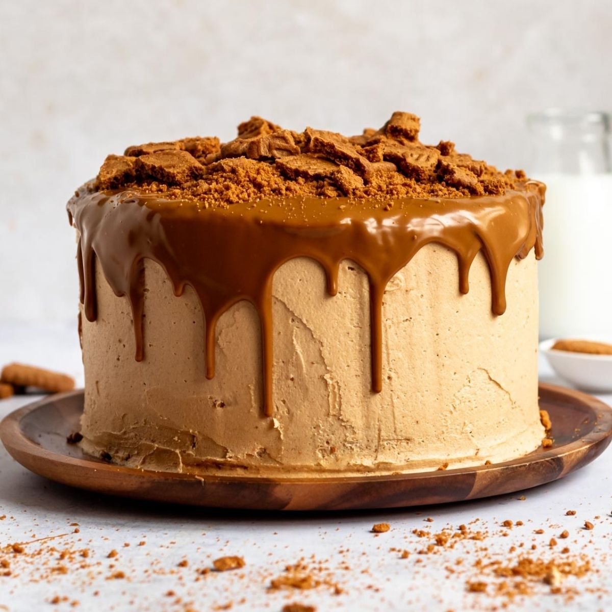

Lotus cheesecake

This is not an ordinary cake, this is a cake for those who like a sweeter, more juicy cake that leads to a sugar frenzy.
A special cake that can only be enjoyed by those who have a special and refined taste for sweets.
Take some time to remember this cake for a long time.
-components-
-bark
- 250 g Lotus biscuits
- 100 g of butter
-glazing
- 150 gr Lotus cream
-fill
- 250 gr Lotus cream
- 350 ml of milk sweet cream
- 400 g of cream cheese(can 250 g of mascarpone and 150 g of cream cheese)
- 100 g of powdered sugar
- 1 teaspoon of vanilla flavoring
-preparation-
-bark
- Grind the lotus biscuit, add melted butter, mix and pat into a mold with a diameter of 22 cm
- Place in the fridge while you prepare the filling.
fill
- Whip the well-chilled sweet cream, not too hard, and set aside
- In another bowl, briefly beat cream cheese with powdered sugar, add vanilla flavoring and lotus cream
- Beat everything nicely a little more and at the end add the whipped sweet cream and gently combine everything, mix by hand
- Spread evenly over the biscuit base and leave to cool and harden in the fridge for an hour
glazing
- Put the jar with lotus cream in a pan with hot water, so that it becomes liquid and pour it over the filling, you will need about 150 gr.
- Decorate as desired and leave to cool for a few more hours, preferably overnight.
just enjoy as in the previous recipes